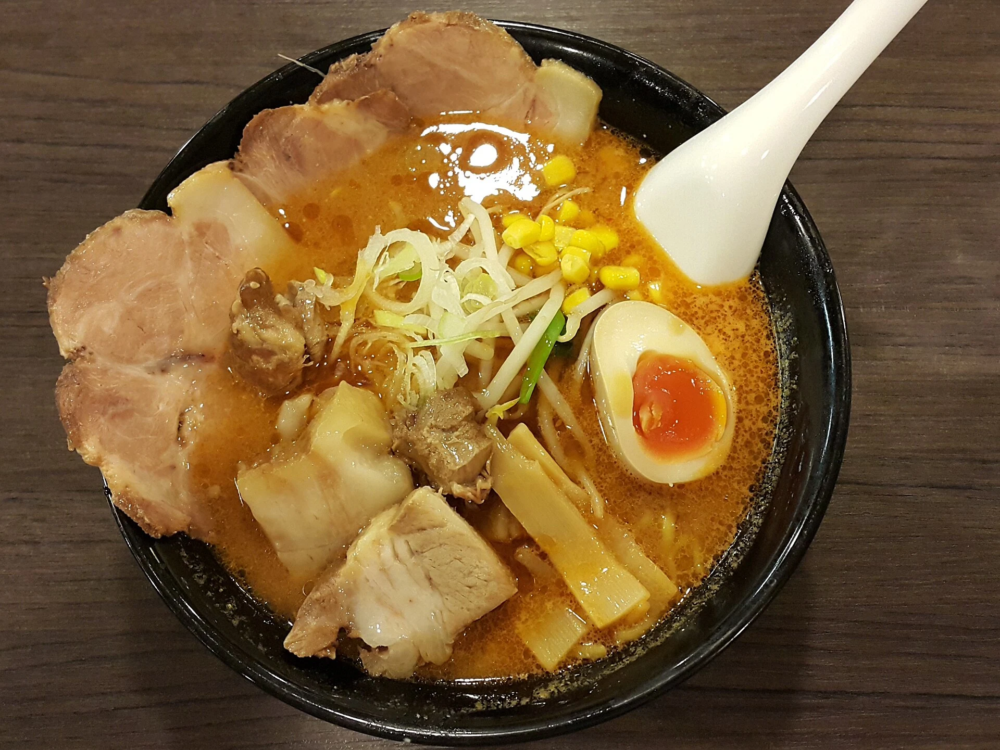

07 / SABORES / 食
O Japão também
se conta à mesa.
Ingredientes, regiões, modos de preparar e histórias para compartilhar.
Abra este capítulo ↓CARDÁPIO DE DESCOBERTAS
Escolha um sabor.
Abra um contexto.
Uma introdução cultural, sem receita única.
Há diferenças em cada região e cozinha.
CULTURA ALIMENTAR / WASHOKU
O patrimônio não cabe
só no prato.
Produzir, preparar e compartilhar também são cultura. A UNESCO reconhece o washoku como uma prática social ligada a conhecimentos e tradições, com destaque para o Ano-Novo.